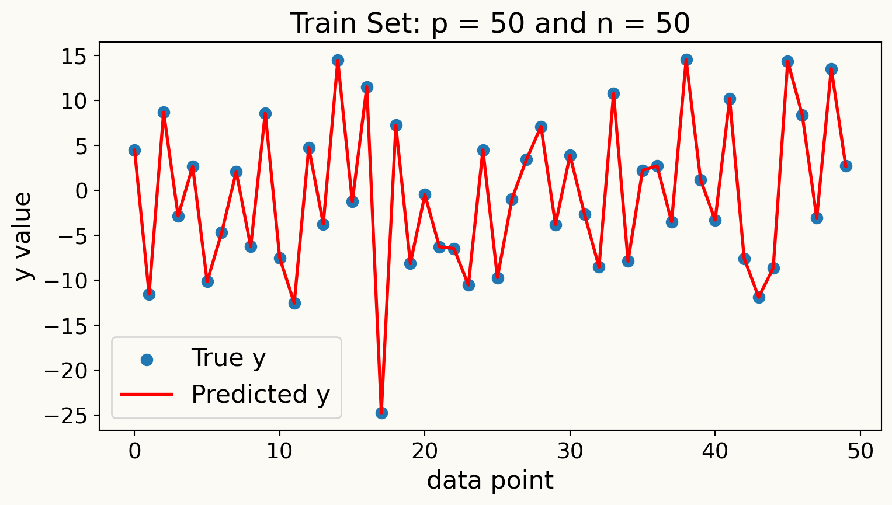
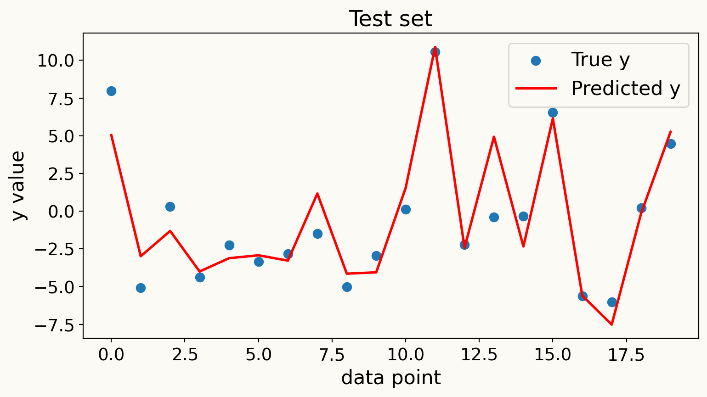
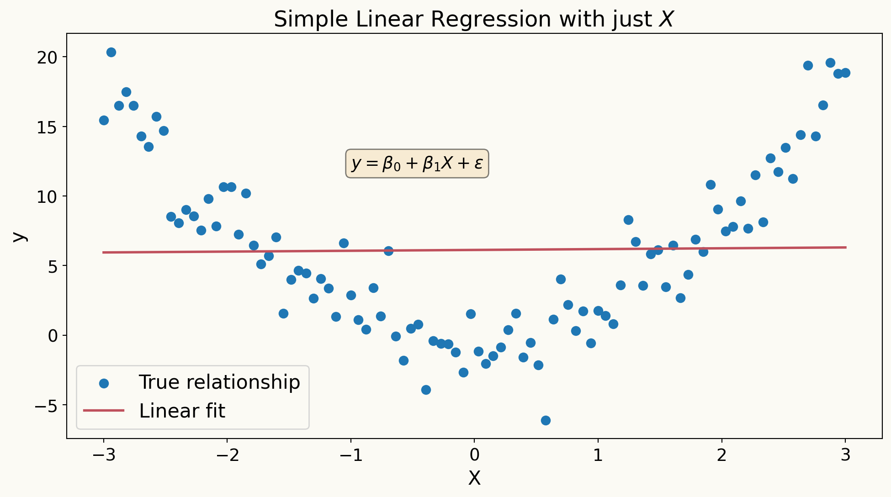
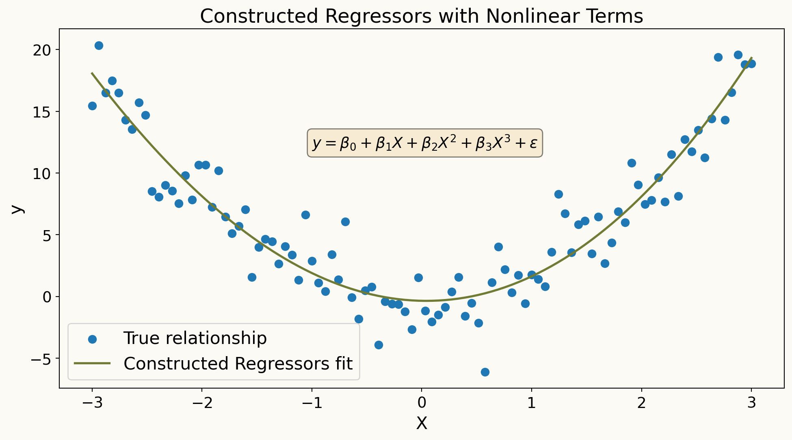
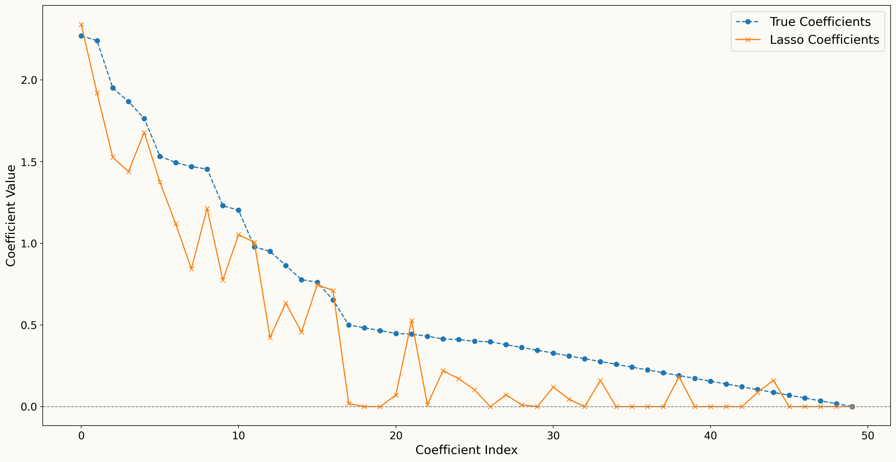

Causal Inference with Machine Learning
Lecturers:
Amir Salimi Babamiri, Cardiff University, UK
Mustafa Aslan, Cardiff University, UK
Harsha Halgamuwe Hewage, Cardiff University, UK
Amirhossein Ghadiri, Cardiff University, UK
Data Lab for Social Good, Cardiff University, UK
13 Feb 2026
Outline
- Motivation and Conceptual Foundations
- Identification
- Randomised Controlled Trials (RCTs)
- Introduction to Linear Regression
- Regularization Techniques for Linear Regression in High-Dimensional Settings
- Statistical Inference on Causal Effects in High Dimensional Linear Regression Models
- Statistical Inference on Predictive and Causal Effects in Modern Nonlinear Regression Models
Outline
- Motivation and Conceptual Foundations
- Identification
- Randomised Controlled Trials (RCTs)
- Introduction to Linear Regression
- Regularization Techniques for Linear Regression in High-Dimensional Settings
- Statistical Inference on Causal Effects in High Dimensional Linear Regression Models
- Statistical Inference on Predictive and Causal Effects in Modern Nonlinear Regression Models
Let’s start thinking causally
Everyday Conversations …
Person 1: I was late to work today because my alarm didn’t ring.
Person 2: Today, the 7:45 am bus did not come. Perhaps there was a driver shortage.
Person 3: My uncle got diagnosed with lung cancer because he was a chain smoker.
Can you identify the cause and effect variables?
- Functioning alarm ⇒ Work arrival
- Driver shortage ⇒ Cancelled buses
- Smoking ⇒ Lung cancer
So, our Research Questions would be:
- Does having a functioning alarm affect work arrival time?
- Does driver shortage impact bus disruptions?
- Does smoking lead to lung cancer?
Can we make the Research Questions causal?
- To answer the questions, we need evidence.
- Evidence comes from real-life data.
- Data needs to be analysed using the correct methodology.
- Correct methodology is developed when we know our end goal is for our research question to give a causal answer!
Reframing the Research Questions:
- Does having a functioning alarm causally affect the work arrival time?
- Does driver shortage cause bus cancellations?
- Does smoking cause lung cancer?
Conceptual Foundation: Correlation vs Causation
| Concept | Meaning |
|---|---|
| Association | The connection between two variables that is mostly based on our presumptions and general observations. |
| Correlation | A statistical term that indicates the degree to which two variables move in coordination with one another. |
| Causation | It is a change in one variable that directly causes a change in another variable; it is a cause-and-effect relationship. |
Counterfactual framework (Rubin’s Causal Model)
For every individual \(i\) there are two Potential Outcomes:
\[ Y_{1i} = \text{outcome if treated} \]
\[ Y_{0i} = \text{outcome if not treated} \]
where \(d\) is the Treatment indicator (1 = treated, 0 = control).
But we only ever observe one of them:
\[ Y_i = d_i Y_{1i} + (1 - d_i) Y_{0i} \]
Fundamental Problem of Causal Inference:
We never observe both \(Y_1\) and \(Y_0\) for the same person at the same time.
Using the Example Data
| Name | \(d\) | \(Y_0\) | \(Y_1\) |
|---|---|---|---|
| Andy | 1 | . | 10 |
| Ben | 1 | . | 5 |
| Chad | 1 | . | 16 |
| Daniel | 1 | . | 3 |
| Edith | 0 | 5 | . |
| Frank | 0 | 7 | . |
| George | 0 | 8 | . |
| Hank | 0 | 10 | . |
Source: Cunningham (2021), Causal Inference: The Mixtape
- If \(d = 1\): we observe \(Y_1\); \(Y_0\) is missing (counterfactual).
- If \(d = 0\): we observe \(Y_0\); \(Y_1\) is missing.
Causal Effect and the Goal
The individual treatment effect is:
\[ \tau_i = Y_{1i} - Y_{0i} \]
But it is never observable for any single individual.
Therefore: causal inference focuses on averages:
\[ ATE = E[Y_1 - Y_0] \]
In data we estimate it using:
\[ ATE = E[Y | d = 1] - E[Y | d = 0] \]
Key Idea:
Causal inference compares the outcome we observe with an outcome we cannot observe, and statistical methods try to approximate the missing counterfactual.
Outline
- Motivation and Conceptual Foundations
- Identification
- Randomised Controlled Trials (RCTs)
- Instrumental Variables (IV) and Difference-in-Differences (DiD)
- Introduction to Linear Regression
- Regularization Techniques for Linear Regression in High-Dimensional Settings
- Statistical Inference on Causal Effects in High Dimensional Linear Regression Models
- Statistical Inference on Predictive and Causal Effects in Modern Nonlinear Regression Models
Identification
Goal:
How to find the causal effect of treatment on the outcome?
- What gives the causal effect? Comparison with the Counterfactual
- Why can’t we see it directly? Potential outcomes problem
- What design assumption makes it recoverable? Identification
“The issue of identification stemmed from the quest to know the attainability of economically meaningful relationships from statistical analysis of economic data” Duo 1993.
Identification Issues
Can we just compare two individuals (one treated and one non-treated)? No!
Potential Identification Issues
Confounding (Omitted Variable Bias): When variables affect both treatment and outcome, we can’t separate causation from correlation.
Selection Bias: The sample or treatment groups are non-randomly selected.
Reverse Causality: Outcome affects treatment rather than treatment affecting outcome.
Measurement Error: When treatment, outcome, or confounders are measured incorrectly.
Simultaneity: It occurs when treatment and outcome influence each other at the same time.
Identification Issues
Model Misspecification: Even if the causal structure is right, the statistical model can fail due to Wrong functional form, Omitted interactions and/or Nonlinearity ignored.
Sorting and Endogeneity: Sorting happens when individuals self-select into treatment in a way that is related to their potential outcomes. We say treatment assignment is endogenous because it is not independent of potential outcomes.
Unobservable Heterogeneity: When unit-specific unobserved characteristics drive both treatment and outcome.
Violation of SUTVA (Stable Unit Treatment Value Assumption): SUTVA needs two assumptions-(A) No Spillover-Your result should not change because someone else got (or didn’t get) the treatment, and (B) Consistency- The treatment we define is exactly the treatment people actually received.
Outline
- Motivation and Conceptual Foundations
- Identification
- Randomised Controlled Trials (RCTs)
- Instrumental Variables (IV) and Difference-in-Differences (DiD)
- Introduction to Linear Regression
- Regularization Techniques for Linear Regression in High-Dimensional Settings
- Statistical Inference on Causal Effects in High Dimensional Linear Regression Models
- Statistical Inference on Predictive and Causal Effects in Modern Nonlinear Regression Models
Randomized Controlled Trials (RCT): Basic Setup
Potential outcomes framework: \[Y_i(1), Y_i(0)\]
Treatment assignment: \[ T_i = \begin{cases} 1 & \text{if unit } i \text{ receives treatment} \\ 0 & \text{if unit } i \text{ is control} \end{cases} \]
Observed outcome: \[ Y_i = T_i Y_i(1) + (1 - T_i) Y_i(0) \]
RCT key feature: Random assignment \[ T_i \perp (Y_i(1), Y_i(0)) \]
Identification: \[ ATE = E[Y_i(1) - Y_i(0)] = E[Y_i | T_i = 1] - E[Y_i | T_i = 0] \]
RCT: Linear Regression Model
In a randomized controlled trial, treatment \(T_i\) is randomly assigned.
Linear model for estimating the treatment effect:
\[ Y_i = \alpha + \beta T_i + \gamma X_i + \varepsilon_i \]
Key feature of an RCT:
\[ \text{Cov}(T_i, \varepsilon_i) = 0 \]
because randomization ensures \(T_i\) is independent of unobserved factors.
Interpretation:
- \(\beta\) measures the causal effect of treatment.
- \(X_i\) are optional controls to improve precision (not identification).
Key idea: random assignment makes the treated and control groups comparable, so the coefficient on \(T_i\) can be interpreted causally.
RCT Validity Issues
Internal validity:
Can we estimate a causal effect for the experimental sample?
Randomization ⇒ solves:
- Confounding
- Selection bias
- Reverse causality
External validity:
Does the effect generalize?
- Population differences
- Institutional, geographic, or behavioral effects
- Experimental setting vs real world
When RCTs Are Not Perfect: Non-compliance
Non-compliance: people do not follow their assignment.
Examples:
- Someone is assigned to the treatment but does not take it.
- Someone in the control group somehow gets the treatment.
Intention-to-Treat (ITT):
- Compare groups based on assignment, not on what they actually did.
- This keeps the randomisation intact.
When RCTs Are Not Perfect: Attrition
Attrition: Some outcomes are missing.
Examples:
- People drop out of the study.
- Some participants cannot be reached later.
Why this is a problem:
- The missing data may be related to the outcome.
- This can break the original randomisation.
What researchers do:
- Use the original assignment for estimation.
- Check whether dropout looks random or systematic.
Outline
- Motivation and Conceptual Foundations
- Identification
- Randomised Controlled Trials (RCTs)
- Instrumental Variables (IV) and Difference-in-Differences (DiD)
- Introduction to Linear Regression
- Regularization Techniques for Linear Regression in High-Dimensional Settings
- Statistical Inference on Causal Effects in High Dimensional Linear Regression Models
- Statistical Inference on Predictive and Causal Effects in Modern Nonlinear Regression Models
Natural Experiments: Idea and Motivation
Key idea:
- Use naturally occurring variation that mimics random assignment.
- Exploit policy changes, institutional rules, shocks, geography.
Goal:
Identify causal effects when RCTs are infeasible.
Assumption: As-if random assignment
\[ T_i \perp (Y_i(1), Y_i(0)) \text{ within some subpopulation} \]
Examples:
- Education reforms
- Weather or natural shocks
- Eligibility rules (cutoffs, policy thresholds)
Natural experiments motivate econometric tools: IV, DiD, Matching, Regression discontinuity.
Instrumental Variables (IV)
When we use IV:
- Treatment is not randomly assigned.
- There is selection, omitted variables, or reverse causality.
- We have something that pushes people into treatment.
Idea:
Find a variable that affects treatment, but does not directly affect the outcome.
Example intuition:
A policy, a rule, or an eligibility threshold that changes who receives the treatment, but does not change outcomes except through that treatment.
What IV does:
- Creates as-if random variation in treatment.
- Lets us focus on the group whose behavior is changed by the instrument.
- Recovers a causal effect even when we can’t control for everything.
Key message:
IV solves endogeneity when we cannot observe or adjust for all confounders.
IV with Continuous Instrument: Setup
Structural causal model:
\[ Y_i = \alpha + \beta T_i + \gamma X_i + \varepsilon_i \]
Problem:
\[ \text{Cov}(T_i, \varepsilon_i) \neq 0 \]
Example sources of endogeneity:
- omitted ability
- selection into treatment
- reverse causality
We introduce an instrument \(Z_i\) (continuous or multi-valued).
IV with Continuous Instrument: 1st and 2nd Stage
First stage (predict treatment):
\[ T_i = \pi_0 + \pi_1 Z_i + \pi_2 X_i + u_i \]
Requirement:
\[ \pi_1 \neq 0 \text{ (instrument relevance)} \]
Reduced form (effect of instrument on outcome):
\[ Y_i = \rho_0 + \rho_1 Z_i + \rho_2 X_i + v_i \]
Second stage (2SLS):
\[ Y_i = \alpha + \beta \hat{T}_i + \gamma X_i + \varepsilon_i \]
where \(\hat{T}_i\) is the fitted value from the first stage.
IV Identification for Continuous Z
Two core assumptions:
Relevance \[ \text{Cov}(Z_i, T_i) \neq 0 \]
Exogeneity \[ Z_i \perp \varepsilon_i \]
(no direct effect of \(Z\) on \(Y\))
What IV estimates:
\[ \beta = \frac{\text{Cov}(Z_i, Y_i)}{\text{Cov}(Z_i, T_i)} \]
(the continuous IV analog of Wald)
Interpretation:
causal effect of \(T\) on \(Y\) for compliers.
Example: Continuous IV
Question:
Does education increase wages?
Endogenous regressor:
\[ T = \text{years of education} \]
Continuous instrument:
\[ Z = \text{distance to nearest college} \]
- 1st stage: college proximity predicts schooling
- 2nd stage: predicted schooling explains wages
Why it works:
proximity affects education but not wages directly.
Difference-in-Differences (DiD)
When we use DiD
- A policy or shock affects one group but not another.
- We observe data before and after the change.
Idea
Compare how outcomes evolve over time in a treated group versus a similar control group.
Why it works
If both groups were on similar trends before the intervention, the change in the treatment group relative to the control group reflects the causal effect.
What DiD does well - Handles unobserved factors that do not change over time. - Captures the impact of large reforms, laws, or shocks. - Works with repeated or panel data.
Key message
DiD isolates the effect of a treatment by comparing changes over time across groups.
DiD: Linear Regression Setup
Two groups (Treated/Control) and two periods (Before/After).
\[ Y_{it} = \alpha + \beta(T_{treat_i} \times P_{post_t}) + \lambda T_{treat_i} + \delta P_{post_t} + \varepsilon_{it} \]
DiD estimator:
coefficient on the interaction term.
\[ \beta = \text{DiD} \]
This captures the causal effect of treatment.
DiD: Identification Conditions
Main assumption:
Parallel trends: \((Y_{T, pre} - Y_{C, pre}) = (Y_{T, post} - Y_{C, post})\) in absence of treatment
Controls in regression allow:
\[ Y_{it} = \alpha + \beta(T_{treat_i} \times P_{post_t}) + \gamma X_{it} + \varepsilon_{it} \]
Why it works:
- removes time-invariant unobservables
- controls for common shocks
DiD Example
Policy:
Minimum wage increases only in Region A.
Model:
\[ Y_{it} = \alpha + \beta(\text{RegionA}_i \times \text{After}_t) + \varepsilon_{it} \]
Suppose:
- Region A employment +5pp
- Region B employment +1pp
\[ \text{DiD} = 5 - 1 = 4\text{pp} \]
Interpretation:
The reform increased employment by 4pp.
Outline
- Motivation and Conceptual Foundations
- Identification
- Randomised Controlled Trials (RCTs)
- Instrumental Variables (IV) and Difference-in-Differences (DiD)
- Introduction to Linear Regression
- Regularization Techniques for Linear Regression in High-Dimensional Settings
- Statistical Inference on Causal Effects in High Dimensional Linear Regression Models
- Statistical Inference on Predictive and Causal Effects in Modern Nonlinear Regression Models
Foundations of Linear Regression
- A linear regression model is given by: \[ Y = \beta^{'} X + \epsilon \]
where \(\mathbb{E}[\epsilon] = 0\).
We consider \(Y\) as the outcome variable, \(X = (X_1, X_2, \ldots, X_p)'\) as the vector of covariates, and \(\beta\) as the vector of parameters.
Our goal is to construct the best linear predictor of \(Y\) given \(X\), which is the linear function of \(X\) that minimizes the mean squared error (MSE):
\[ \beta = \arg\min_{\beta \in \mathbb{R}^p} E[(Y - \beta^{'} X)^2] \]
Goodness of Fit
The mean squared error (MSE) of the best linear predictor is given by: \[ \text{MSE} = E[(Y - \beta^{'} X)^2] \]
The \(R^2\) of the best linear predictor is defined as: \[ R^2 = \frac{E[(\hat{\beta}^{'} X)^2]}{E[Y^2]} = 1 - \frac{E_n \epsilon^2}{E_n Y^2} \in [0, 1] \]
Interpretation:
- \(R^2\) measures the proportion of variance in \(Y\) that is explained by the linear predictor \(\hat{\beta}^{'} X\).
Overfitting: What happens when \(p/n\) is large?
When the number of predictors \(p\) is large relative to the number of observations \(n\), models can become overly complex and fit the noise in the training data rather than the underlying signal.
Consider an example where \(p = n\) and all \(X\) variables are independent standard normal random variables. In this case, we have
\[ \text{MSE}_{sample} = 0 \quad \text{and} \quad R^2_{sample} = 1 \]
WHY?
- Here we have extreme overfitting: the model perfectly fits the training data but fails to generalize.
Overfitting Example

Inference about Predictive Effects or Association
Predictive effects describe how our (population best linear) predictions change when a value of target regressor changes, holding all other regressors constant.
Specifically, we partition the vector of regressors \(X\) into two parts: the target regressor of interest \(D\) and the remaining regressors \(W\) (also called control variables or covariates).
\[ X = (D, W'), \]
- We can then write the best linear predictor of \(Y\) given \(X\) as
\[ Y = \beta_1 D + \beta^{'}_2 W + \epsilon \]
How does the predicted value of change if increases by a unit while remains unchanged?
- The predictive value of \(Y\) changes by \(\beta_1\) units when \(D\) increases by one unit.
- Note that this interpretation is purely predictive and does not imply causality.
WHY?
- This is because we are holding all other regressors \(W\) constant, which may not be realistic in practice.
- For example: In a wage regression, \(D\) could be years of education, and \(W\) could include experience, gender, and location. The coefficient on education (\(\beta_1\)) tells us how much more (or less) we predict someone will earn for each additional year of education, with the same experience, gender, and location.
Understanding \(\beta_1\) via “Partialling-Out”
“Partialling-out” is the process of isolating the effect of the target regressor \(D\) on the outcome variable \(Y\) by removing the influence of the control variables \(W\).
Partialling-out operation is define as a procedure with three steps:
- Regress \(Y\) on \(W\) and obtain the residuals \(\tilde{Y}\).
\[ Y = \gamma^{'}_{YW} W + u \quad \Rightarrow \quad \tilde{Y} = Y - \hat{Y} = Y - \gamma^{'}_{YW} W \]
- Regress \(D\) on \(W\) and obtain the residuals \(\tilde{D}\).
\[ D = \gamma^{'}_{DW} W + v \quad \Rightarrow \quad \tilde{D} = D - \hat{D} = D - \gamma^{'}_{DW} W \]
- Regress the residuals \(\tilde{Y}\) on the residuals \(\tilde{D}\) to estimate \(\beta_1\).
\[ \tilde{Y} = \beta_1 \tilde{D} + \tilde{\epsilon} \]
We can also show partialling-out procedure by partialling-out operation to both sides of our regression equation
\[ Y = \beta_1 D + \beta^{'}_2 W + \epsilon \]
to get
\[ \tilde{Y} = \beta_1 \tilde{D} + \beta^{'}_2 \tilde{W} + \tilde{\epsilon} \]
Which simplifies to
\[ \tilde{Y} = \beta_1 \tilde{D} + \epsilon \]
Why does \(\tilde{W}\) disappear in the partialled-out regression?
Why \(\tilde{\epsilon} = \epsilon\)?
Interpretation of \(\beta_1\) in Partialling-Out
\(\beta_1\) can be interpreted as the effect of \(D\) on \(Y\) after removing the influence of \(W\) as univariate linear regression of residualized \(Y\) on residualized \(D\).
Residuals are defined by partialling-out the linear effects of \(W\) from both \(Y\) and \(D\).
When \(p/n\) is large, using linear regression for partialling-out can lead to overfitting issues, resulting in biased estimates of \(\beta_1\).
To address this, we can use dimension reduction or regularization techniques, such as Lasso or Ridge regression, during the partialling-out steps.
Outline
- Motivation and Conceptual Foundations
- Identification
- Randomised Controlled Trials (RCTs)
- Instrumental Variables (IV) and Difference-in-Differences (DiD)
- Introduction to Linear Regression
- Regularization Techniques for Linear Regression in High-Dimensional Settings
- Statistical Inference on Causal Effects in High Dimensional Linear Regression Models
- Statistical Inference on Predictive and Causal Effects in Modern Nonlinear Regression Models
Linear Regression with High-Dimensional
Covariates
- A regression model
\[ Y = \beta^{'} X + \epsilon, \quad \epsilon \perp X, \]
where \(\beta^{'} X\) is the population best linear predictor of \(Y\) given \(X\).
- The vector \(X = (X_1, X_2, \ldots, X_p)\) represents the \(p\) covariates (\(p\) regressors).
\(p\) is large, possibly larger than \(n\)
- This case where is very large is what we call a high-dimensional setting.

Constructed Regressors
In high-dimensional settings, we often create new features from the original covariates to capture complex relationships.
if \(W\) are raw covariates, we can create technical (constructed) regressors \(X\) by including polynomial terms, interaction terms, or other transformations of \(W\).
\[ X = P(W) = (P_1(W), P_2(W), \ldots, P_p(W))' \]
where the set of transformations \(P(W)\) can be very large, leading to a high-dimensional feature space.
- Example transformations include squared terms (\(W_i^2\)), interaction terms (\(W_i W_j\)), and higher-order polynomials (\(W_i^3\), etc.).
Why Do We Need Constructed Regressors?
The main motivation for using constructed regressors is to built more flexible models that can capture non-linear relationships and interactions among the original covariates.
By expanding the feature space in prediction rules, \(\beta^{'} X = \beta^{'} P(W)\), we can approximate complex functions of the original covariates \(W\) more accurately.
\(\beta^{'} P(W)\) are nonlinear in \(W\) but still linear in parameters \(\beta\).


Best Predictor
- In the population, the best predictor of \(Y\) given \(W\) is
\[ g(W) = E[Y|W] \]
the conditional expectation of \(Y\) given \(W\). The function \(g(W)\) is called the regression function of \(Y\) on \(W\).
- The conditional expectation funnction \(g(W)\) solves the best prediction problem
\[ \min_{m(W)} E[(Y - m(W))^2]. \]
Here we minimize the mean squared prediction error over all prediction rules \(m(W)\).
\(\beta^{'} P(W)\) is an approximation to best predictor \(g(W)\)
Using richer and more complex constructed regressors \(P(W)\) allows us to better approximate the true regression function \(g(W)\).
Motivation for Regularization
- Classical linear regression can perform poorly in high-dimensional settings due to overfitting.
- This is especially apparent when \(p \geq n\).
- Regularization techniques, such as Lasso and Ridge regression, help mitigate overfitting by adding a penalty term to the loss function.
Lasso Regression
Lasso (Least Absolute Shrinkage and Selection Operator) regression adds a penalty to the loss function
Lasso constructs the estimator \(\hat{\beta}\) by solving the following penalized least squares problem:
\[ \min_{b \in \mathbb{R}^p} \left\{ \frac{1}{n} \sum_{i=1}^{n} (Y_i - b^{'} X_i)^2 + \lambda \sum_{j=1}^{p} |b_j| \right\} \]
The first term is the usual mean squared error, while the second term is called a penalty term.
The tuning parameter \(\lambda \geq 0\) controls the strength of the penalty.
Lasso performs both variable selection and regularization, shrinking some coefficients to exactly zero, effectively selecting a simpler model.
As long as \(\lambda > 0\), the introduction of the penalty term leads to a prediction rule that is less complex and less prone to overfitting compared to ordinary least squares.
How to Choose the Tuning Parameter \(\lambda\)?
The tuning parameter \(\lambda\) in Lasso regression controls the trade-off between fitting the training data well and keeping the model simple.
A larger \(\lambda\) increases the penalty for large coefficients, leading to a sparser model with more coefficients set to zero.
A smaller \(\lambda\) allows the model to fit the training data more closely, potentially leading to overfitting if \(p\) is large relative to \(n\).
Common methods for selecting \(\lambda\) include:
- A theoretically valid choice is
\[ \lambda = 2 c \hat{\sigma} \sqrt{n} \Phi^{-1}(1 - \alpha / (2p)) \]
where \(\hat{\sigma}\) is an estimate of the standard deviation of the error term, \(\Phi^{-1}\) is the inverse CDF of the standard normal distribution, and \(c > 1\) is a constant, and \(\alpha\) is a small significance level (e.g., 0.05).
- Cross-validation: Split the data into training and validation sets multiple times, fit the model for different values of \(\lambda\), and choose the one that minimizes the average validation error.
Lasso shrinks relevant regressors towards zero and “underestimates” the absolute value of the coefficients.
Therefore, Lasso may not be ideal for inference about predictive effects or causal effects.
Example: Bias in Lasso Coefficients

Post-Lasso Estimation
To mitigate the bias introduced by Lasso, we can use a two-step procedure called Post-Lasso estimation.
The Post-Lasso estimator is obtained by:
First, use Lasso regression to select a subset of relevant regressors (those with non-zero coefficients).
Then, fit an ordinary least squares regression using only the selected regressors from the first step.
Does Post-Lasso, \(\hat{\beta^{'}} X\), provide a good approximation to best linear prediction rule, \(\beta^{'} X\) ?
We will have \(s\) selected regressors after Lasso, also called effective dimension
To estimate the Post-Lasso estimator, we need \(n/s\) to be sufficiently large to avoid overfitting in the second step.
Ridge Regression
- Ridge regression is another regularization technique that adds a penalty to the loss function based on the squared magnitude of the coefficients.
- Ridge regression constructs the estimator \(\hat{\beta}\) by solving the following penalized least squares problem:
\[ \min_{b \in \mathbb{R}^p} \left\{ \frac{1}{n} \sum_{i=1}^{n} (Y_i - b^{'} X_i)^2 + \lambda \sum_{j=1}^{p} b_j^2 \right\} \]
- In contrast to Lasso, Ridge regression does not perform variable selection; instead, it shrinks all coefficients towards zero but none are set exactly to zero.
Elastic Net Regression
- Elastic Net regression combines the penalties of both Lasso and Ridge regression.
\[ \min_{b \in \mathbb{R}^p} \left\{ \frac{1}{n} \sum_{i=1}^{n} (Y_i - b^{'} X_i)^2 + \lambda_1 \sum_{j=1}^{p} |b_j| + \lambda_2 \sum_{j=1}^{p} b_j^2 \right\} \]
\(\lambda_1\) controls the Lasso penalty, while \(\lambda_2\) controls the Ridge penalty.
Two tuning parameters could be selected via cross-validation or other hyperparameter optimization methods in machine learning, such as grid search or Bayesian optimization.
Choice of Regression Methods in Practice
The choice between Lasso, Ridge, and Elastic Net regression depends on the specific characteristics of the data and the goals of the analysis.
If we are interested in building the best prediction, we can tune each method via cross-validation and select the one with the lowest prediction error on test data.
Outline
- Motivation and Conceptual Foundations
- Identification
- Randomised Controlled Trials (RCTs)
- Instrumental Variables (IV) and Difference-in-Differences (DiD)
- Introduction to Linear Regression
- Regularization Techniques for Linear Regression in High-Dimensional Settings
- Statistical Inference on Causal Effects in High Dimensional Linear Regression Models
- Statistical Inference on Predictive and Causal Effects in Modern Nonlinear Regression Models
Causal interpretation of predictive effects
- Remember our regression model with target regressor \(D\) and control variables \(W\):
\[ Y = \beta_1 D + \beta^{'}_2 W + \epsilon \]
If conditioning on \(W\) is sufficient to control for confounding between \(D\) and \(Y\), then \(\beta_1\) can be interpreted as the average causal effect of \(D\) on \(Y\).
Then, predictive effect of \(D\) on \(Y\) can answer the causal question:
What is the average change in \(Y\) when we intervene to increase \(D\) by one unit, holding \(W\) constant?
Double Lasso
The key step is application of Lasso regression for partialling-out in the presence of high-dimensional covariates. Consider the following regression model:
\[ Y = \alpha D + \beta^{'} W + \epsilon, \]
where \(D\) is the target regressor of interest and \(W\) is a vector of \(p\) control variables. After partialling-out \(W\) from both \(Y\) and \(D\), we get
- We run Lasso regressions of \(Y\) on \(W\) and \(D\) on \(W\):
\[ \hat{\gamma}_{YW} = \arg\min_{\gamma \in \mathbb{R}^p} \left\{ \frac{1}{n} \sum_{i=1}^{n} (Y_i - \gamma^{'} W_i)^2 + \lambda \sum_{j=1}^{p} |\gamma_j| \right\}, \]
\[ \hat{\gamma}_{DW} = \arg\min_{\gamma \in \mathbb{R}^p} \left\{ \frac{1}{n} \sum_{i=1}^{n} (D_i - \gamma^{'} W_i)^2 + \lambda \sum_{j=1}^{p} |\gamma_j| \right\}. \]
- Compute the residuals \(\tilde{Y}\) and \(\tilde{D}\):
\[ \tilde{Y} = Y - \hat{\gamma}_{YW}^{'} W, \quad \tilde{D} = D - \hat{\gamma}_{DW}^{'} W. \]
- Finally, we run an ordinary least squares regression of \(\tilde{Y}\) on \(\tilde{D}\) to estimate \(\alpha\):
\[ \begin{align} \hat{\alpha} &= \arg\min_{\alpha \in \mathbb{R}} \frac{1}{n} \sum_{i=1}^{n} ({\tilde{Y}}_i - \alpha {\tilde{D}}_i)^2 \\ &= (E_n \tilde{D}^2)^{-1} E_n\tilde{D} \tilde{Y}. \end{align} \]
Uncertainty in \(\hat{\alpha}\)
- To quantify the uncertainty of the Double Lasso estimator \(\hat{\alpha}\), we can use the following formula for the standard deviation of \(\hat{\alpha}\):
\[ V = (E_n \tilde{D}^2)^{-1} E_n (\tilde{D}^2 \hat{\epsilon}^2) (E_n \tilde{D}^2)^{-1}, \]
- The standard error of \(\hat{\alpha}\) is then:
\[ \text{SE}(\hat{\alpha}) = \sqrt{V/n}. \]
- This allows us to construct confidence intervals and perform hypothesis tests for the estimated causal effect \(\hat{\alpha}\). For example, a 95% confidence interval for \(\alpha\) can be constructed as:
\[ \left[\hat{\alpha} \pm 2 \times \sqrt{V/n} \right]. \]
Practical Example: A comparison of OLS and Double Lasso
For the relevant code and data, go to here
Inference on Many Coefficients
If we are interested in more than one coefficient, we can repeat the Double Lasso procedure for each target regressor of interest.
Here we consider the model: \[ Y = \sum_{j=1}^{p_1} \alpha_j D_j + \sum_{k=1}^{p_2} \beta_k W_k + \epsilon, \]
where the number of target regressors \(p_1\) can also be large, and the number of control variables \(p_2\) can be large as well.
Motivation for Many Coefficients Inference
There can be multiple policy variables of interest that we want to analyze simultaneously, such as the effects of different education policies on student outcomes.
We can be interested in heterogeneous treatment effects across different subgroups, which requires estimating multiple coefficients for each subgroup.
We can be interested in nonlinear effects of policies
One by One Double Lasso
- For each \(j = 1, \ldots, p_1\), we can apply the one-by-one Double Lasso procedure to estimate \(\alpha_j\) while treating the other \(D_{-j}\) as part of the control variables.
\[ Y = \alpha_j D_j + \gamma_j{'} W_j + \epsilon, \quad W_j = ((D_{-j})^{'}, W^{'})^{'} \]
The double lasso provides a high quality estimate of \(\hat{\alpha} = (\alpha_j)_{j=1}^{p_1}\) for each \(j\) and we can construct confidence intervals for each \(\alpha_j\).
This allows us to make inference on multiple coefficients simultaneously, even in high-dimensional settings where \(p_1\) and \(p_2\) are large relative to \(n\).
Outline
- Motivation and Conceptual Foundations
- Identification
- Randomised Controlled Trials (RCTs)
- Instrumental Variables (IV) and Difference-in-Differences (DiD)
- Introduction to Linear Regression
- Regularization Techniques for Linear Regression in High-Dimensional Settings
- Statistical Inference on Causal Effects in High Dimensional Linear Regression Models
- Statistical Inference on Predictive and Causal Effects in Modern Nonlinear Regression Models]{style=“color: #1A6872;”}
Introduction
- We recall our regression model with target regressor \(D\) and control variables \(W\), where we ask predictive effect question:
How does the predicted value of outcome \(Y\),
\[ E[Y|D, W], \]
change if a regressor value \(D\) increases by one init, while regressor values, \(W\), remain unchanged
Double/debiased machine learning (DML) Inference in the Partially Linear Regression Model (PLM)
- A partially linear regression model:
\[ Y = \alpha D + {\color{#707C36}{g(W)}} + \epsilon, \quad E[\epsilon|D,W] = 0, \tag{1}\]
where \(Y\) is the outcome variable, \(D\) is the treatment variable, \(W\) is a vector of control variables.
The model allows a part of the regression function, \(\color{#707C36}{g(W)}\), to be fully nonlinear
However, the model is not fully general, because it imposes additivity in \(\color{#707C36}{g(W)}\) and \(D\)
Partialling-Out
Applying partialling-out to Equation 1, we obtain:
\[ \tilde{Y} = \alpha \tilde{D} + \epsilon, \]
where \(\tilde{Y}\) and \(\tilde{D}\) are the residuals left after predicting \(Y\) and \(D\) using \(W\).
\[ \tilde{Y} := Y - \ell(W) \quad \text{and} \quad \tilde{D} := D - m(W), \] = E[Y|W]
where \(\ell(W)\) and \(m(W)\) are conditional expectation functions of \(Y\) and \(D\) given \(W\), respectively.
\[ \ell(W) = E[Y|W], \quad m(W) = E[D|W]. \]
DML Estimation Procedure
- Split the data into random folds: \(\{1, \ldots, n\} = \cup_{k=1}^K I_k\). Compute ML estimators \(\hat{\ell}_{k}\) and \(\hat{m}_k\), leaving out the \(k\)-th fold of the data. Obtain the cross-fitted residuals for each fold \(i \in I_k\):
\[ \tilde{Y}_i = Y_i - \hat{\ell}_k(W_i), \quad \tilde{D}_i = D_i - \hat{m}_k(W_i). \]
- Apply the ordinary least squares to \(\tilde{Y}_i\) on \(\tilde{D}_i\) to obtain the DML estimator \(\hat{\alpha}\):
\[ \hat{\alpha} = E_n[(\tilde{Y}_i-\alpha \tilde{D}_i) \tilde{D}_i] =0. \]
- Construct confidence intervals for \(\alpha\):
\[ \left[\hat{\alpha} \pm 2 \times \sqrt{V/n} \right], \]
covers \(\alpha\) in approximately 95% of repeated samples, where \(V\) is the variance of the DML estimator \(\hat{\alpha}\).
Selecting the Best ML Learners of \(\hat{\ell}\) and \(\hat{m}\)
- We can use cross-validation to select the best ML learners for estimating \(\hat{\ell}\) and \(\hat{m}\).
\[ \frac{1}{K} \sum_{k=1}^K ||\hat{\ell_k}- \ell||_{L^2}^2 \quad \text{and} \quad \frac{1}{K} \sum_{k=1}^K ||\hat{m_k}- m||_{L^2}^2 \]
- Rather than selecting a single best learner, we can also use residuals from multiple learners to form linear combinations of the residuals, which can potentially improve the estimation of \(\alpha\).
DML Inference in the Interactive Regression Model (IRM)
Here, we relax the additivity assumption in the partially linear regression model.
We consider estimation of average treatment effects when treatment effects are fully heterogeneous and the treatment variable is binary.
We consider vectors, \(W = (Y, D, X)\), where \(Y\) is the outcome variable, \(D \in \{0,1\}\) is a binary treatment variable or policy, and \(X\) is a vector of control variables.
\[ Y = g(D, X) + \epsilon, \quad E[\epsilon|D,X] = 0, \tag{2}\]
\[ D = m(X) + \tilde{D}, \quad E[\tilde{D}|X] = 0, \tag{3}\]
Since \(D\) is not additively separable in the Equation 2, this model is more general than the partially linear regression model.
Average Predictive Effect (APE)
- The average predictive effect (APE) of the binary treatment \(D\) on the outcome \(Y\) is defined as:
\[ \theta_0 = E[g(1, X) - g(0, X)] \]
which represents the average predictive effect of switching the treatment from 0 to 1, averaging over the distribution of covariates \(X\).
- The confounding factors, \(X\), affect the policy variable via the propensity score \(m(X) = E[D|X]\) and affect the outcome variable via the regression function \(g(D, X)\).
APE Estimation
ATE will be based on the relation:
\[ \theta_{0} = \mathbb{E}[\varphi_{0}(W)], \tag{4}\]
where
\[ \varphi_{0}(W) = g_{0}(1, X) - g_{0}(0, X) + \bigl(Y - g_{0}(D, X)\bigr) H_{0} \]
and
\[ H_{0} = \frac{\mathbf{1}(D = 1)}{m_{0}(X)} - \frac{\mathbf{1}(D = 0)}{1 - m_{0}(X)} \]
is the Horvitz-Thompson transformation.
DML Estimation Procedure for APEs/ATEs in IRM
- Split the data into random folds: \(\{1, \ldots, n\} = \cup_{k=1}^K I_k\). Compute ML estimators \(\hat{g}_{k}\) and \(\hat{m}_k\), leaving out the \(k\)-th fold of the data, such that \(\epsilon \le \hat{m}_k \le 1-\epsilon\) for some small \(\epsilon > 0\). For each fold \(i \in I_k\), compute:
\[ \hat{\varphi}(W_i) = \hat{g}_{k}(1, X_i) - \hat{g}_{k}(0, X_i) + \bigl(Y_i - \hat{g}_{k}(D_i, X_i)\bigr) \hat{H}_i, \]
where \(\hat{H}_i = \frac{\mathbf{1}(D_i = 1)}{\hat{m}_k(X_i)} - \frac{\mathbf{1}(D_i = 0)}{1 - \hat{m}_k(X_i)}\).
Compute the estimator \(\theta_0 = E_n[\hat{\varphi}(W_i)]\).
Construct confidence intervals for \(\theta_0\):
\[ \left[\hat{\theta} \pm 2 \times \sqrt{\hat{V}/n} \right], \]
where \(\hat{V} = E_n[(\hat{\varphi}(W_i) - \hat{\theta})^2]\).
The Local Average Treatment Effect Model (LATE)
Consider a structural Equation Model (SEM) where:
\[ \begin{aligned} Y &:= f_{Y}(D, X, A, \varepsilon_{Y}) \\ D &:= f_{D}(Z, X, A, \varepsilon_{D}) \in \{0,1\}, \\ Z &:= f_{Z}(X, \varepsilon_{Z}) \in \{0,1\}, \\ X &:= \varepsilon_{X}, \quad A := \varepsilon_{A}, \end{aligned} \]
where all \(\epsilon\) are all independent.
- Suppose the instrument \(Z\) is is an offer to participate in a training program and that the treatment \(D\) is actual endogenous participation in the training program. Participation in the program may depend on unobservables, \(A\), such as motivation, which also affects the outcome \(Y\). The variable \(X\) captures observed covariates such as age, education, and work experience.
The model allows us to identify the local average treatment effect (LATE), defined as:
\[ \theta = E[Y(1) - Y(0)|D(1) > D(0)], \]
where \({D(1) > D(0)}\) defines the compliance event, where switching the instrument, \(Z\), from 0 to 1.
In the LATE model, \(\theta\) can be identified by the ratio of two statistical parameters,
\[ \theta_0 = \theta_1 / \theta_2, \tag{5}\]
where \[ \theta_1 = E[E[Y|Z=1, X] - E[Y|Z=0, X]], \]
and \[ \theta_2 = E[E[D|Z=1, X] - E[D|Z=0, X]]. \]
Equation 5 is equivalent to the below expression:
\[ \theta_0 = \frac{E[E[Y|Z=1, X] - E[Y|Z=0, X]]}{E[E[D|Z=1, X] - E[D|Z=0, X]]}. \]
This parameter is the ratio of the average predictive effect of \(Z\) on \(Y\) to the average predictive effect of \(Z\) on \(D\).
DML Estimation for LATE
Define regression functions:
\[ \begin{aligned} \mu_0(Z, X) &= E[Y|Z, X] \\ m_0(Z, X) &= E[D|Z, X] \\ p_0(X) &= E[Z|X]. \end{aligned} \]
Therefore, nuance parameters are \(\eta = (\mu, m, p)\).
The DML estimator of \(\theta\) is given by:
\[ \psi(W; \theta, \eta) := \mu(1, X) - \mu(0, X) + H(p)\bigl(Y - \mu(Z, X)\bigr) - \bigl(m(1, X) - m(0, X) + H(p)\bigl(D - m(Z, X)\bigr)\bigr)\theta, \]
for \(W = (Y, D, X, Z)\) and
\[ H(p) := \frac{Z}{p(X)} - \frac{1 - Z}{1 - p(X)} . \]
Practical Example: Application of PLM, IRM and LATE to the 401(K) data
For the relevant code and data, go to here
Appendix
Why Partialling-out works: Neyman Orthogonality
The key to the success of the Double Lasso procedure is the property of Neyman orthogonality, which ensures that the estimation error from the first step (Lasso) does not bias the estimation of \(\alpha\) in the second step.
Neyman orthogonality means that the moment condition used to estimate \(\alpha\) is insensitive to small errors in the estimation of the nuisance parameters \(\gamma_{YW}\) and \(\gamma_{DW}\).
\[ \eta^{\circ} = (\gamma_{DW}^{'}, \gamma_{YW}^{'})^{'}. \]
- The local insensitivity of target parameters to nuisance parameters Neyman orthogonality.
\[ \partial_{\eta} \alpha(\eta^{\circ}) = 0. \]
- This property allows us to achieve \(\sqrt{n}\)-consistency and asymptotic normality of the Double Lasso estimator \(\hat{\alpha}\), even when the nuisance parameters are estimated at slower rates due to high dimensionality.
Simulation Example: Neyman Orthogonality
- We compare the performance of the naive and orthogonal methods in a computational experiment where we \(p=n=100\) and we have \(\beta_j = 1/j^2, (\gamma_{DW})_j = 1/j^2\)
\[ Y = 1 D + \beta^{'} W + \epsilon_Y, \quad W \sim N(0, I), \quad \epsilon_Y \sim N(0, 1) \]
\[ D = \gamma_{DW}^{'} W + \tilde{D}, \quad \tilde{D} \sim N(0, 1)/4 \]
Results
We run 1000 simulations and compute the bias and standard deviation of the naive and orthogonal estimators. The results are as follows:
The reason that the naive estimator does not perform well is that it only selects controls, \(W_j\), that are strongly predictive of \(Y\) and omitting weak predictors of \(Y\) that could be strongly predictive of \(D\) leads to omitted variable bias in the estimation of \(\alpha\). This is called ommitted variable bias.
In contrast, the orthogonal estimator is designed to be robust to such selection mistakes, which is why it performs much better in terms of bias and standard deviation.
Double Selection
An alternative to the Double Lasso procedure is the Double Selection method, which also uses Lasso for variable selection but in a slightly different way.
- Find controls that predict \(Y\) by running a Lasso regression of \(Y\) on \(W\) and selecting the non-zero coefficients.
- Find controls that predict \(D\) by running a Lasso regression of \(D\) on \(W\) and selecting the non-zero coefficients.
- Take the union of the selected controls from both steps and run an ordinary least squares regression of \(Y\) on \(D\) and the union of selected controls to estimate $
This procedure is approximately equivalent to the partialling out approach and also relies on the principle of Neyman orthogonality to achieve valid inference on \(\alpha\).
Group Average Treatment Effects (GATEs)
We may also be interested in estimating group average treatment effects (GATEs) for a subgroup:
\[ \theta_0(x) = E[g(1, X) - g(0, X)|G = 1], \]
where \(G\) is is a group indicator defined in terms of covariates \(X\).
For example, we might be interested in the impact of a vaccine on teenagers, so \(G\) would be an indicator for \(13 \leq \text{age} \leq 19\).
DML estimation of GATEs can be done by modifying the estimation procedure for APEs/ATEs to focus on the subgroup defined by \(G=1\).
\[ \hat{\theta}(x) = \mathbb{E}[\varphi_{0}(W) | G=1) = \frac{E[\hat{\varphi}(W) G]}{\Pr(G=1)}. \]
Causal DAGs for the 401(K) Example
Three Causal DAGs for analysis of the 401(K) example in which adjusting for covariates \(X\) is sufficient to control for confounding between \(D\) and \(Y\).